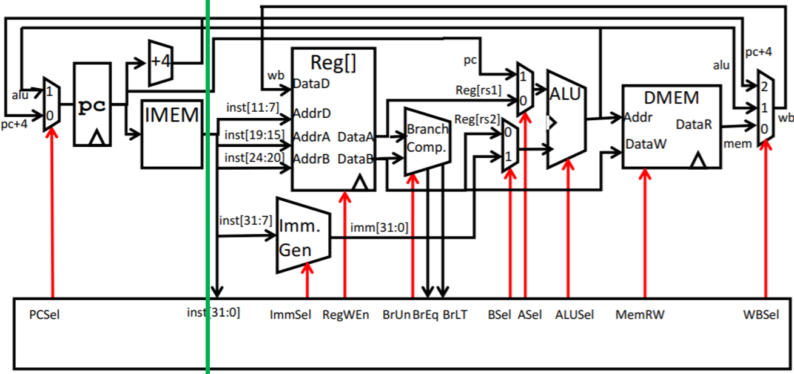

Project 3: CS61CPU
Deadline: Monday, July 29, 11:59:59 PM PT
For Tasks 1-4, Lab 5 is required, and Lectures 12-15, Discussion 7-8, and Homework 3-4 are highly recommended.
For Tasks 5-10, Lab 6 is required, and Lectures 12-15, Discussion 7-8, and Homework 3-4 are highly recommended.
In this project, you will be building a CPU that runs actual RISC-V instructions.
Checkpoint
If you receive a score of 20/100 (excluding points from the feedback form) or above by Monday, July 22th, 11:59 PM PT, we will award 0.5 extra credit points. The score is equivalent to finish tasks 1-4. This checkpoint is all-or-nothing, and you cannot apply slip days to it. The feedback form is not included in the checkpoint.
Setup
You must complete this lab on your local machine. See Lab 0 if you need to set up your local machine again.
For common errors with Logisim or Project 3-specific errors, please look at the common errors page.
Setup: Git
This assignment can be done alone or with a partner.
Warning: Once you create a group on Gradar, you will not be able to change (add, remove, or swap) partners for this project (both Project 3A and 3B), so please be sure of your partner before starting the project. You must add your partner on both Gradar and to every Gradescope submission.
If there are extenuating circumstances that require a partner switch (e.g. your partner drops the class, your partner is unresponsive), please reach out to us privately.
-
Visit Gradar. Log in and register your Project 3 group (and add your partner, if you have one), then create a GitHub repo for you or your group. If you have a partner, one partner should create a group and invite the other partner to that repo. The other partner should accept the invite without creating their own group.
-
Clone the repository on your workspace. Please use your local machine (you don't need the hive machine at all for this project). Windows users should clone outside WSL (Git Bash is recommended).
(replace
USERNAMEwith your GitHub username) -
Navigate to your repository:
-
Add the starter repo as a remote:
If you run into git issues, please check out the common errors page.
Setup: Logisim
This project is done in Logisim. In the 61c-proj3 directory, run bash test.sh download_tools to download Venus and Logisim for this project. (You only need to run this once.)
For the rest of the project, to open Logisim, run java -jar tools/logisim-evolution.jar.
Restoring Starter Files
To restore starter files, please check out the common errors page.
Task 1: Arithmetic Logic Unit (ALU)
Fill in the ALU in alu.circ so that it can perform the required arithmetic calculations.
| Input Name | Bit Width | Description |
|---|---|---|
A | 32 | Data to use for Input A in the ALU operation |
B | 32 | Data to use for Input B in the ALU operation |
ALUSel | 4 | Selects which operation the ALU should perform (see the list of operations with corresponding switch values below) |
| Output Name | Bit Width | Description |
|---|---|---|
ALUResult | 32 | Result of the ALU operation |
Below is the list of ALU operations for you to implement, along with their associated ALUSel values. add is already made for you. You are allowed and encouraged to use built-in Logisim components to implement the arithmetic operations.
| ALUSel Value | Instruction |
|---|---|
| 0 | add: Result = A + B |
| 1 | sll: Result = A << B[4:0] |
| 2 | slt: Result = (A < B (signed)) ? 1 : 0 |
| 3 | Unused |
| 4 | xor: Result = A ^ B |
| 5 | srl: Result = (unsigned) A >> B[4:0] |
| 6 | or: Result = A | B |
| 7 | and: Result = A & B |
| 8 | mul: Result = (signed) (A * B)[31:0] |
| 9 | mulh: Result = (signed) (A * B)[63:32] |
| 10 | Unused |
| 11 | mulhu: Result = (A * B)[63:32] |
| 12 | sub: Result = A - B |
| 13 | sra: Result = (signed) A >> B[4:0] |
| 14 | Unused |
| 15 | bsel: Result = B |
Some additional tips:
- When performing shifts, only the lower 5 bits of
Bare needed, because only shifts of up to 32 are supported. - The result of multiplying 2 32-bit numbers can be up to 64 bits of information, but we're limited to 32-bit data lines, so
mulhandmulhuare used to get the upper 32 bits of the product. TheMultipliercomponent has aCarry Outoutput, with the description: "the upper bits of the product". This might be particularly useful for certain multiply operations. - The comparator component might be useful for implementing instructions that involve comparing inputs.
- A multiplexer (MUX) might be useful when deciding between operation outputs. In other words, consider simply processing the input for all operations, and then outputting the one of your choice.
- The ALU tests for Part A only use ALUSel values for defined instructions, so your design doesn't need to worry about the unused values.
Testing
On your local machine, start by running bash test.sh in the 61c-proj3 directory on your local machine. This gives you an overview of the commands you can run for testing. In particular, bash test.sh part_a runs all the tests for Part A. You can also provide the name of a specific task to run all the tests for that particular task.
To test this task, on your local machine, run bash test.sh test_alu.
If you fail a test, the test runner will print the difference between the expected and actual output. To view the complete reference output (.ref file) and your output (.out file), you can use run bash test.sh format with the name of the output file. For this task:
Debugging
See the Testing and Debugging appendix for a more detailed debugging guide.
All the testing .circ circuit files are in the tests folder. These circuits feed a sequence of inputs to your ALU circuit (one per clock cycle) and records the outputs from your circuit.
In Logisim, open one of the testing circuits for this task:
tests/unit-alu/alu-add.circ
tests/unit-alu/alu-all.circ
tests/unit-alu/alu-logic.circ
tests/unit-alu/alu-mult.circ
tests/unit-alu/alu-shift.circ
tests/unit-alu/alu-slt-sub-bsel.circ
To view your circuit, right-click your ALU, and select View alu. To step through the inputs to your circuit at each time step, click File -> Manual Tick Full Cycle. As you step through the inputs, use the Poke Tool to check the values in each wire.
Note: Avoid making edits in the test circuit, as they may be lost!
Task 2: Register File (RegFile)
Fill in regfile.circ so that it contains 32 registers that can be written to and read from.
| Input Name | Bit Width | Description |
|---|---|---|
ReadIndex1 | 5 | Determines which register's value is sent to the ReadData1 output |
ReadIndex2 | 5 | Determines which register's value is sent to the ReadData2 output |
WriteIndex | 5 | The register to write to on the next rising edge of the clock (if RegWEn is 1) |
WriteData | 32 | The data to write into rd on the next rising edge of the clock (if RegWEn is 1) |
RegWEn | 1 | Determines whether data is written to the register file on the next rising edge of the clock |
clk | 1 | Clock input |
| Output Name | Bit Width | Description |
|---|---|---|
ReadData1 | 32 | The value of the register identified by ReadIndex1 |
ReadData2 | 32 | The value of the register identified by ReadIndex2 |
ra | 32 | The value of ra (x1) |
sp | 32 | The value of sp (x2) |
t0 | 32 | The value of t0 (x5) |
t1 | 32 | The value of t1 (x6) |
t2 | 32 | The value of t2 (x7) |
s0 | 32 | The value of s0 (x8) |
s1 | 32 | The value of s1 (x9) |
a0 | 32 | The value of a0 (x10) |
- The 8 constant output registers are included in the output of the
regfilecircuit for testing and debugging purposes. Make sure to connect these 8 output pins to their corresponding registers. - The
x0register should always contain the 0 value, even if an instruction tries writing to it.
Some additional tips:
- Take advantage of copy-paste! It might be a good idea to make one register completely and use it as a template for the others to avoid repetitive work. You can duplicate a selected component or group of components in Logisim using
Ctrl/Cmd + D. - The
Enablepin on the built-in register may come in handy.
Testing and Debugging
To test your function, in your local terminal, run bash test.sh test_regfile.
To view the reference output and your output, you can run these formatting commands:
To debug your circuit, open the following test circuits, click into your regfile circuit, and tick full cycles to step through inputs:
tests/unit-regfile/regfile-more-regs.circ
tests/unit-regfile/regfile-read-only.circ
tests/unit-regfile/regfile-read-write.circ
tests/unit-regfile/regfile-x0.circ
Task 3: Immediate Generator
For the rest of Part A, we will be creating just enough of the CPU to execute the addi instruction. In Part B, you will revisit these circuits and expand them to support more instructions.
Fill in the immediate generator in imm-gen.circ (not the imm_gen subcircuit in cpu.circ) so that it can generate immediates for the addi instruction. You can ignore other immediate types for now.
| Input Name | Bit Width | Description |
|---|---|---|
Instruction | 32 | The instruction being executed |
ImmSel | 3 | Value determining how to reconstruct the immediate (you can ignore this for now) |
| Output Name | Bit Width | Description |
|---|---|---|
Immediate | 32 | Value of the immediate in the instruction (assume the instruction is addi for now) |
Testing and Debugging
You'll have to complete the next task before debugging this one!
Task 4: Datapath
Fill in cpu.circ so that it contains a datapath for a single-cycle (not pipelined) processor that can execute the addi instruction.
Here are the inputs and outputs to the processor. You can leave most of them unchanged in this task, since they are not needed for the addi instruction.
| Input Name | Bit Width | Description |
|---|---|---|
MemReadData | 32 | Data at MemAddress from memory |
Instruction | 32 | The instruction at memory address ProgramCounter |
clk | 1 | Clock input |
| Output Name | Bit Width | Description |
|---|---|---|
ra | 32 | The value of ra (x1) |
sp | 32 | The value of sp (x2) |
t0 | 32 | The value of t0 (x5) |
t1 | 32 | The value of t1 (x6) |
t2 | 32 | The value of t2 (x7) |
s0 | 32 | The value of s0 (x8) |
s1 | 32 | The value of s1 (x9) |
a0 | 32 | The value of a0 (x10) |
MemAddress | 32 | The address in memory to read from or write to |
MemWriteData | 32 | Data to write to memory |
MemWriteMask | 4 | The write enable mask for writing data to memory |
ProgramCounter | 32 | Address of the Instruction input |
We know that trying to build a datapath from scratch might be intimidating, so the rest of this section offers more detailed guidance for creating your processor.
Recall the five stages for executing an instruction:
- Instruction Fetch (IF)
- Instruction Decode (ID)
- Execute (EX)
- Memory (MEM)
- Write Back (WB)
Task 4.1: Instruction Fetch
We have already provided a simple implementation of the program counter. It is a 32-bit register that increments by 4 on each clock cycle. The ProgramCounter is connected to IMEM (instruction memory), and the Instruction is returned from IMEM.
Nothing for you to implement in this sub-task!
Task 4.2: Instruction Decode
In this step, we need to break down the Instruction input and send the bits to the right subcircuits.
What type of instruction is addi? What are the different fields in the instruction, and which bits correspond to each field?
addi is an I-type instruction. The fields are:
imm [31-20]rs1 [19-15]funct3 [14-12]rd [11-7]opcode [6-0]
In Logisim, what tool would you use to split out different groups of bits?
Use the splitter to extract each of the 5 fields from the instruction.
Which fields should connect to the register file? Which inputs of the register file should they connect to?
The rs1 bits you split from the instruction should connect to ReadIndex1 on the regfile.
The rd bits you split from the instruction should connect to WriteIndex on the regfile.
I-type instructions don't have rs2 so we can ignore rs2 for now.
Remember to connect the clock to the register file!
What needs to be connected to the immediate generator?
Connect the Instruction to the immediate generator. Your immediate generator from the previous task should take the instruction and output the correct immediate for you.
Task 4.3: Execute
In this step, we will use the decoded instruction fields to compute the actual instruction.
What two data values (A and B) should the addi instruction input to the ALU?
Input A should be the ReadData1 from the regfile.
Input B should be the immediate from the immediate generator.
What ALUSel value should the instruction input to the ALU?
ALUSel selects which computation the ALU will perform. Since we only care about implementing addi for now, we can hard-code ALU to always select the add operation (ALUSel = 0b0000).
Task 4.4: Memory
The addi instruction doesn't use memory, so there's nothing for you to implement in this sub-task!
The memory stage is where the memory can be written to using store instructions and read from using load instructions. Because the addi instruction does not use memory, we do not have to worry about it for Part A. Please ignore the DMEM and leave its I/O pins undriven.
Task 4.5: Write Back
In this step, we will write the result of our addi instruction back into a register.
What data is the addi instruction writing, and where is the instruction writing this data to?
addi takes the result of the addition computation (from the ALU output) and writes it to the register rd.
Connect ALUResult to WriteData on the regfile.
Since the addi instruction always writes to a register, you can hard-wire RegWEn to 1 for now so that register writes are always enabled.
Testing and Debugging
See the Testing and Debugging appendix for a more detailed debugging guide.
To test your function, in your local terminal, run bash test.sh test_addi.
To view the reference output and your output, you can run these formatting commands:
To debug your circuit, open the following test circuits, click into your CPU circuit, and tick full cycles to step through inputs:
tests/integration-addi/addi-basic.circ
tests/integration-addi/addi-positive.circ
tests/integration-addi/addi-negative.circ
Task 5: I-type Instructions
The instructions you need to implement for this task are listed below:
| Instruction | Type | Opcode | Funct3 | Funct7 | Operation |
addi rd, rs1, imm |
I | 0x13 |
0x0 |
rd = rs1 + imm |
|
andi rd, rs1, imm |
0x7 |
rd = rs1 & imm |
|||
ori rd, rs1, imm |
0x6 |
rd = rs1 | imm |
|||
xori rd, rs1, imm |
0x4 |
rd = rs1 ^ imm |
|||
slli rd, rs1, imm |
I* | 0x1 |
0x00 |
rd = rs1 << imm |
|
srli rd, rs1, imm |
0x5 |
0x00 |
rd = rs1 >> imm (Zero-extend) |
||
srai rd, rs1, imm |
0x5 |
0x20 |
rd = rs1 >> imm (Sign-extend) |
||
slti rd, rs1, imm |
I | 0x2 |
rd = (rs1 < imm) ? 1 : 0 |
Task 5.1: Datapath
Recall that you already implemented addi in Part A. Other I-type instructions use the same datapath as addi, except that each I-type instruction needs the ALU to perform a different operation. In Part A, we hard-coded the ALUSel input to the ALU subcircuit to be 0b0000 so that the ALU always performs the addition selection, but now you should change ALUSel input to the ALU subcircuit to use the value from the control logic subcircuit (which you'll implement in the next task).
Remember to also change the RegWEn input to the regfile subcircuit to use the value from the control logic subcircuit.
Task 5.2: Control Logic
As you add logic to support more instructions in the next few tasks, you will need to add control logic to enable the relevant datapath components depending on the instruction being executed.
Modify control-logic.circ to output the correct control logic signals for I-type instructions. See the control logic appendix for more details.
Testing and Debugging
We don't have any provided tests for I-type instructions, so you'll need to write your own tests to find bugs in your implementation. Before requesting help from staff, please make sure you have some tests written, or we'll ask you to write some tests first before helping you.
- Navigate to
tests/integration-custom/in. - Write a RISC-V test and save it in a filename ending in
.s. - Run
bash test.sh test_custom.
test_custom compiles your RISC-V test code to a Logisim circuit and runs it. If you want to only compile your test, run bash test.sh create_custom. If you want to only run your test, run bash test.sh run_custom.
To debug your circuits, you can step through the debugging circuits (similar to what you did in Project 3A).
- Navigate to the
testsfolder, then navigate to the folder of the relevant test, e.g.tests/integration-custom. - Open the generated
.circfile in Logisim. Click into the circuits you made, and tick full cycles to step through inputs.
Task 6: R-type Instructions
The instructions you need to implement for this task are listed below:
| Instruction | Type | Opcode | Funct3 | Funct7 | Operation |
add rd, rs1, rs2 |
R | 0x33 |
0x0 |
0x00 |
rd = rs1 + rs2 |
sub rd, rs1, rs2 |
0x0 |
0x20 |
rd = rs1 - rs2 |
||
and rd, rs1, rs2 |
0x7 |
0x00 |
rd = rs1 & rs2 |
||
or rd, rs1, rs2 |
0x6 |
0x00 |
rd = rs1 | rs2 |
||
xor rd, rs1, rs2 |
0x4 |
0x00 |
rd = rs1 ^ rs2 |
||
sll rd, rs1, rs2 |
0x1 |
0x00 |
rd = rs1 << rs2 |
||
srl rd, rs1, rs2 |
0x5 |
0x00 |
rd = rs1 >> rs2 (Zero-extend) |
||
sra rd, rs1, rs2 |
0x5 |
0x20 |
rd = rs1 >> rs2 (Sign-extend) |
||
slt rd, rs1, rs2 |
0x2 |
0x00 |
rd = (rs1 < rs2) ? 1 : 0 |
||
mul rd, rs1, rs2 |
0x0 |
0x01 |
rd = (rs1 * rs2)[31:0] |
||
mulh rd, rs1, rs2 |
0x1 |
0x01 |
rd = (rs1 * rs2)[63:32] (Signed) |
||
mulhu rd, rs1, rs2 |
0x3 |
0x01 |
rd = (rs1 * rs2)[63:32] (Unsigned) |
Task 6.1: Datapath
Modify your datapath in cpu.circ so that it can support R-type instructions.
If you're stuck, read further for some guiding questions. As with Task 4, it may help to think about each of the five stages for executing an instruction.
Instruction Fetch: How do R-type instructions affect the program counter?
R-type instructions always increment the program counter by 4 to fetch the next instruction, just like the addi instruction from Part A. This means we don't need to modify the program counter implementation for this task.
Instruction Decode: What do we need to read from the register file?
R-type instructions require reading the values of two source registers (rs1 and rs2) from the register file. In Part A, you split the rs1 bits from the instruction and passed them to the regfile. Now, you should also split the rs2 bits from the instruction and pass them to the regfile.
Execute: What two data values (A and B) should an R-type instruction input to the ALU?
R-type instructions pass the register values from the regfile into the ALU. In Part A, you already passed the first register value RegReadData1 into the first input of the ALU. However, for the addi instruction, the second input of the ALU is an immediate. Since you want to support both R-type instructions and the addi instruction, you should use a multiplexer to select which input will be inputted to the ALU.
The select bit of this multiplexer is BSel. You will implement the logic for determining BSel from the instruction bits in the control logic later in this task.
Memory: Do R-type instructions write to memory?
R-type instructions do not write to memory (they write to a register on the CPU, which is different from memory). This means we don't need to modify DMEM for this task.
Write back: What data is the R-type instruction writing, and where is the instruction writing this data to?
R-type instructions take the result of the computation (from the ALU output) and write the result to the register rd. In Part A, you already implemented logic to write the ALU output into a destination register.
Task 6.2: Control Logic
Modify control-logic.circ to output the correct control logic signals for R-type instructions. See the control logic appendix for more details.
Testing and Debugging
We don't have any provided tests for R-type instructions, so you'll need to write your own tests to find bugs in your implementation. Before requesting help from staff, please make sure you have some tests written, or we'll ask you to write some tests first before helping you.
- Navigate to
tests/integration-custom/in. - Write a RISC-V test and save it in a filename ending in
.s. - Run
bash test.sh test_custom.
Task 7: B-type Instructions
The instructions you need to implement for this task are listed below:
| Instruction | Type | Opcode | Funct3 | Operation |
beq rs1, rs2, offset |
B | 0x63 |
0x0 |
if(rs1 == rs2)
|
bge rs1, rs2, offset |
0x5 |
if(rs1 >= rs2 (signed))
|
||
bgeu rs1, rs2, offset |
0x7 |
if(rs1 >= rs2 (unsigned))
|
||
blt rs1, rs2, offset |
0x4 |
if(rs1 < rs2 (signed))
|
||
bltu rs1, rs2, offset |
0x6 |
if(rs1 < rs2 (unsigned))
|
||
bne rs1, rs2, offset |
0x1 |
if(rs1 != rs2)
|
Task 7.1: Branch Comparator
Fill in the branch comparator subcircuit in branch-comp.circ. This subcircuit takes two inputs and outputs the result of comparing the two inputs. We will use the output later for implementing branches.
| Signal Name | Direction | Bit Width | Description |
|---|---|---|---|
BrData1 | Input | 32 | First value to compare |
BrData2 | Input | 32 | Second value to compare |
BrUn | Input | 1 | 1 when an unsigned comparison is wanted, and 0 when a signed comparison is wanted |
BrEq | Output | 1 | Set to 1 if the two values are equal |
BrLt | Output | 1 | Set to 1 if the value in rs1 is less than the value in rs2 |
We've provided some unit tests for the branch comparator subcircuit. These are not comprehensive. You can run these tests with bash test.sh test_branch_comp.
Task 7.2: Immediate Generator
Edit the immediate generator in imm-gen.circ so that it can generate immediates for B-type instructions in addition to immediates for I-type instructions (which you implemented in Part A).
Recall that the bits of the immediate are stored in different bits of the instruction, depending on the type of the instruction. The ImmSel signal, which you will implement in the control logic, will determine which type of immediate this subcircuit should generate.
The immediate storage formats are listed below:
| Type |
ImmSel (default) |
Bits 31-20 | Bits 19-12 | Bit 11 | Bits 10-5 | Bits 4-1 | Bit 0 |
|---|---|---|---|---|---|---|---|
| I | 0b000 |
inst[31] |
inst[30:20] |
||||
| S | 0b001 |
inst[31] |
inst[30:25] |
inst[11:7] |
|||
| B | 0b010 |
inst[31] |
inst[7] |
inst[30:25] |
inst[11:8] |
0 |
|
| U | 0b011 |
inst[31:12] |
0 |
||||
| J |
0b100 |
inst[31] |
inst[19:12] |
inst[20] |
inst[30:21] |
0 |
|
For this project, you may treat I*-type immediates as I-type immediates, since the ALU should only use the lowest 5 bits of the B input when computing shifts.
Recall that all immediates are 32 bits and sign-extended. (Sign extension is shown in the table as inst[31] repeated in the upper bits.)
We've provided some unit tests for the immediate generator subcircuit. These are not comprehensive. You can run these tests with bash test.sh test_imm_gen.
Note that if you only implement generating B-type immediates now, some tests for other immediate types will fail, but make sure that the imm-gen-b-type test passes.
The ImmSel values in the table represent the default encoding (mapping of ImmSel values to immediate types). If you choose to use a different encoding:
- Navigate to
tests/unit-imm-gen. - Open
imm-gen-encoding.csv. - Replace the numbers with your selected encoding (in decimal). For example, if you're using
ImmSel = 0b110to denote an I-type instruction, the second line should sayI,6. - Run the unit tests with
bash test.sh test_imm_gen.
Task 7.3: Datapath
Modify your datapath in cpu.circ so that it can support B-type instructions.
If you're stuck, read further for some guiding questions. As with Task 4, it may help to think about each of the five stages for executing an instruction.
Instruction Fetch: How do B-type instructions affect the program counter?
Recall that branching instructions add an immediate to the current value of PC. If the branch is taken, the PC changes to be the result of this addition. If the branch is not taken, or the instruction is not an B-type instruction, then PC changes to PC+4 (just like in the previous tasks). We will implement this in the write-back stage.
Instruction Decode: What do we need to read from the register file?
B-type instructions have two source registers, rs1 and rs2, that we need to read from the register file. In the previous task, you already implemented reading the values in rs1 and rs2 for R-type instructions.
Execute: What two data values (A and B) should an B-type instruction input to the ALU?
B-type instructions use the ALU to add an immediate to PC. You will need to add a multiplexer so that the ALU can receive either PC or the value in rs1, depending on the instruction being executed. The select bit of this multiplexer is ASel. In the previous tasks, you already implemented sending an immediate to the ALU.
Memory: Do B-type instructions write to memory?
B-type instructions do not write to memory. This means we don't need to modify DMEM for this task.
Write back: What data is the B-type instruction writing, and where is the instruction writing this data to?
B-type instructions take the result of the addition (PC + immediate, from the ALU output) and might write the result to PC (depending on if the branch is taken). You should use a multiplexer to select which value will be written to PC.
The select bit of this multiplexer is PCSel. You will implement the logic for determining PCSel from the instruction bits in the control logic.
Task 7.4: Control Logic
Modify control-logic.circ to output the correct control logic signals for B-type instructions. See the control logic appendix for more details.
Testing and Debugging
We have provided some tests for B-type instructions. You can run them with:
These tests are not comprehensive, so you should write your own tests to find bugs in your implementation.
- Navigate to
tests/integration-custom/in. - Write a RISC-V test and save it in a filename ending in
.s. - Run
bash test.sh test_custom.
Task 8: Loading and Storing
The instructions you need to implement for this task are listed below:
| Instruction | Type | Opcode | Funct3 | Operation |
lb rd, offset(rs1) |
I | 0x03 |
0x0 |
rd = 1 byte of memory at address rs1 + imm, sign-extended |
lh rd, offset(rs1) |
0x1 |
rd = 2 bytes of memory starting at address rs1 + imm, sign-extended |
||
lw rd, offset(rs1) |
0x2 |
rd = 4 bytes of memory starting at address rs1 + imm |
||
sb rs2, offset(rs1) |
S | 0x23 |
0x0 |
Stores least-significant byte of rs2 at the address rs1 + imm in memory |
sh rs2, offset(rs1) |
0x1 |
Stores the 2 least-significant bytes of rs2 starting at the address rs1 + imm in memory |
||
sw rs2, offset(rs1) |
0x2 |
Stores rs2 starting at the address rs1 + imm in memory |
Task 8.1: Immediate Generator
Edit the immediate generator in imm-gen.circ so that it can generate immediates for S-type instructions in addition to all the instruction types from previous tasks. See the earlier immediate generator task for details.
We've provided some unit tests for the immediate generator subcircuit. These are not comprehensive. You can run these tests with bash test.sh test_imm_gen.
Note that if you only implement generating S-type immediates now, some tests for other immediate types will fail, but make sure that the imm-gen-s-type test passes.
Task 8.2: Partial Loads and Stores
See Appendix: Partial Loads and Stores to implement this task.
Task 8.3: Datapath
With the help of the partial load and partial store circuits you've just made, modify your datapath in cpu.circ so that it can support loads and stores.
You should provide an address input MemAddress to DMEM. Remember that the ALU calculates this address by adding the address in rs1 and the offset immediate.
You should also provide MemWriteMask and MemWriteData to DMEM. These are calculated by your partial load and partial store subcircuits.
For load instructions, you should also add functionality in the write-back stage so that the DMEM output data, processed by your partial load subcircuit, is written back to the rd register.
Task 8.4: Control Logic
Modify control-logic.circ to output the correct control logic signals for loads and stores. See the control logic appendix for more details.
Testing and Debugging
You'll need to write your own tests to find bugs in your implementation. Before requesting help from staff, please make sure you have some tests written, or we'll ask you to write some tests first before helping you.
- Navigate to
tests/integration-custom/in. - Write a RISC-V test and save it in a filename ending in
.s. - Run
bash test.sh test_custom.
We have provided some tests for load and store instructions, but they require lui to be implemented first. You can run them with:
Task 9: Jumps and U-type Instructions
The instructions you need to implement for this task are listed below:
| Instruction | Type | Opcode | Funct3 | Operation |
jal rd, imm |
J | 0x6f |
rd = PC + 4
|
|
jalr rd, rs1, imm |
I | 0x67 |
0x0 |
rd = PC + 4
|
auipc rd, imm |
U | 0x17 |
rd = PC + imm |
|
lui rd, imm |
0x37 |
rd = imm |
Task 9.1: Immediate Generator
Edit the immediate generator in imm-gen.circ so that it can generate immediates for U-type instructions and J-type instructions. See the earlier immediate generator task for details.
We've provided some unit tests for the immediate generator subcircuit. These are not comprehensive. You can run these tests with bash test.sh test_imm_gen.
Task 9.2: Datapath
Modify your datapath in cpu.circ so that it can support these instructions. Most of these instructions are already supported by your datapath so far.
Note that the U-type instructions require left-shifting the immediate by 12 bits (e.g. lui is written as rd = imm << 12 on the reference card), but this should already be done by your immediate generator, so your datapath doesn't need to perform any extra shifting.
To support jalr, you should connect PC+4 to your multiplexer in the write-back stage so that PC+4 can be written back to rd.
Task 9.3: Control Logic
Modify control-logic.circ to output the correct control logic signals for jumps and U-type instructions. See the control logic appendix for more details.
Hint: Be careful about which ALU operation you're performing for the lui instruction. One of the ALU operations you made in Part A but didn't use anywhere else will come in handy here.
Testing and Debugging
We have provided some tests for jump instructions and lui (but not auipc). You can run them with:
These tests are not comprehensive, so you should write your own tests to find bugs in your implementation.
- Navigate to
tests/integration-custom/in. - Write a RISC-V test and save it in a filename ending in
.s. - Run
bash test.sh test_custom.
Task 10: Pipelining
In this task, you will implement a 2-stage pipeline in your CPU:
- Instruction Fetch: An instruction is fetched from the instruction memory.
- Execute: The instruction is decoded, executed, and committed (written back). This is a combination of the remaining four stages of a classic five-stage RISC-V pipeline (ID, EX, MEM and WB).
The separation between the two pipeline stages (highlighted by the green dividing line on the datapath) is illustrated below.

Task 10.1: Getting Started
To get started, first think about which paths will have intermediate pipeline registers in them. Look at the provided illustration above and consider all the paths that intersect the dividing line. Paths that transfer data to the rest of the datapath (data going from left to right) will have corresponding pipeline registers in them, while feedback paths (data going from right to left) will not.
Think about which values are now different between the two stages of the pipeline. For example, will stage 1 and stage 2 have the same or different PC values? If the stages need different PCs, then you now need two different PC values in your circuit at any given time step.
Once you've listed out which values are different between the stages (hint: there aren't many), you'll need to store those values between the pipelining stages.
Finally, go through your entire circuit and make sure that you specify which stage's value you want to use for any values that are different between stages. For example, if the stages need different PCs, then any time you use PC in your circuit, you should specify whether you want to use the stage 1 PC, or the stage 2 PC.
Note: During the first cycle, the instruction register sitting between the pipeline stages won't contain an instruction loaded from memory. What should the second stage do? Luckily, Logisim automatically sets registers to zero on reset, so the instruction pipeline register will automatically start with a no-op! If you wish, you can depend on this behavior of Logisim.
Task 10.2: Hazards
Since your CPU will support branch and jump instructions, you'll need to handle control hazards that occur when branching.
The instruction immediately after a branch or jump should not be executed if a branch is taken. By the time you send a branch/jump instruction into stage 2, stage 1 has already fetched (possibly) the wrong next instruction. Therefore, you will need to flush the instruction fetched in stage 1 by replacing it with a no-op. You should flush the stage 1 instruction only if a branch is taken in the stage 2 instruction (do not flush if it is not taken). You should always flush the stage 1 instruction when the stage 2 instruction is a jump.
Hint: One of the control logic signals will tell you whether a branch or a jump is taken. You can use this control logic signal (from stage 2) in your stage 1 logic to determine when you need to flush the pipeline.
To flush an instruction, your stage 1 logic should send a no-op instruction into stage 2 instead of using the fetched instruction. You can use addi x0, x0, 0 (0x00000013) as a no-op.
Some more things to consider:
- To MUX a no-op into stage 2, do you place it before or after the instruction register?
- What address should be requested next while the EX stage executes a no-op? Is this different than normal?
Testing and Debugging
You can run the tests from the previous tasks on your pipelined CPU by adding the --pipelined or -p flag to the testing commands. For example:
Note that your pipelined CPU will no longer pass the non-pipelined tests (i.e. if you run tests without -p, they'll fail).
Task 11: Partner/Feedback Form
Congratulations on finishing the project! We'd love to hear your feedback on what can be improved for future semesters.
Please fill out this short form, where you can offer your thoughts on the project and (if applicable) your partnership. Any feedback you provide won't affect your grade, so feel free to be honest and constructive.
Submission and Grading
Submit your assignment to the Project 3 submission on Gradescope.